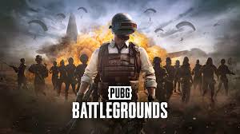
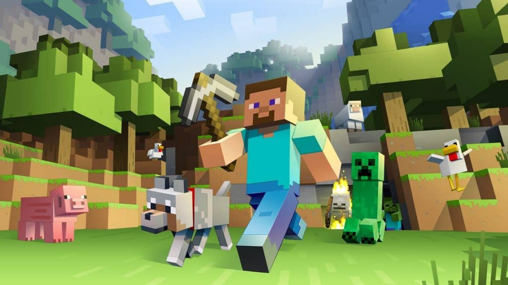
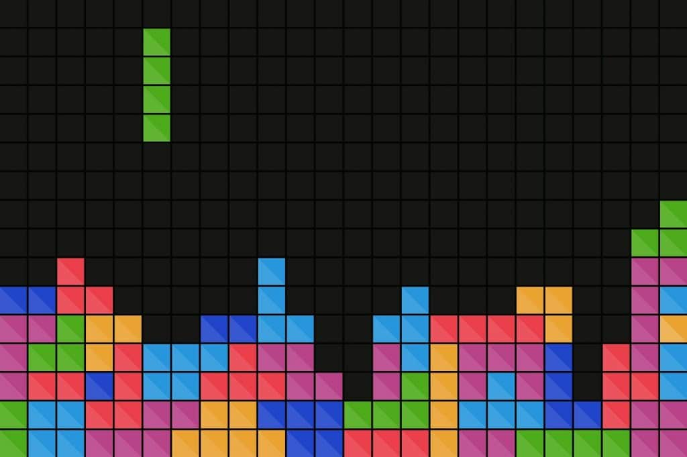

Em 2015, a CD Projekt RED entregou aos jogadores uma obra-prima que transcendeu as expectativas: The Witcher 3: Wild Hunt. Este RPG de mundo aberto não apenas cativou os fãs da série, mas também atraiu uma nova legião de jogadores. Com uma narrativa envolvente, um vasto mundo para explorar e gráficos impressionantes, o jogo vendeu mais de 50 milhões de cópias, solidificando seu lugar entre os grandes e sendo considero por muitos o melhor RPG de todos os tempos.
A série Grand Theft Auto (GTA) é conhecida por sua narrativa cativante e seu mundo aberto expansivo, e GTA V não foi exceção. Lançado em 2013, o jogo da Rockstar Games ultrapassou todas as expectativas. Com mais de 185 milhões de cópias vendidas, GTA V não é apenas um dos jogos mais vendidos de todos os tempos, mas também um fenômeno cultural e se tornou o produto de entretenimento mais lucrativo da história, além de após mais de 10 anos de seu lançamento continuar vivo e recebendo atualizações constantes para seus milhões de jogadores ativos.

Caso você não tenha ouvido falar, Minecraft é um jogo onde é necessário sobreviver em um mundo composto de blocos, animais e monstros. É só isso. Um homem em uma terra desconhecida, cercado de criaturas e muito espaço para deixar sua imaginação fluir. Todos os terrenos em Minecraft podem ser destruídos e transformados em materiais para construção de outras coisas, qualquer outra coisa que você tiver em mente.
Por último, mas definitivamente não menos importante, temos Tetris. Este jogo de quebra-cabeça simples, criado pelo designer russo Alexey Pajitnov em 1984, tornou-se um fenômeno global. Com mais de 500 milhões de cópias vendidas, Tetris é o jogo mais vendido de todos os tempos, e seu legado continua a influenciar a indústria de jogos até hoje. E na realidade, é estimado que o número total de unidades vendidas desse fenômeno possa ser ainda maior, devida a quantidade de cópias não licenciadas adquiridas. Em um mundo onde a indústria de jogos continua a crescer e evoluir, esses 10 jogos mais vendidos não são apenas testemunhas do sucesso comercial, mas também representam momentos cruciais na história dos videogames. Desde os dias iniciais de Super Mario Bros. até o fenômeno global de Tetris, esses jogos deixaram uma marca indelével na cultura popular. À medida que olhamos para o futuro, é emocionante imaginar quais novos títulos se destacarão e se juntarão a essa lista prestigiosa de jogos que capturaram a imaginação e o coração de jogadores em todo o mundo.
Texto originalmente tirado de Olhar Digital
Site criado por Emerson Lima de Souza